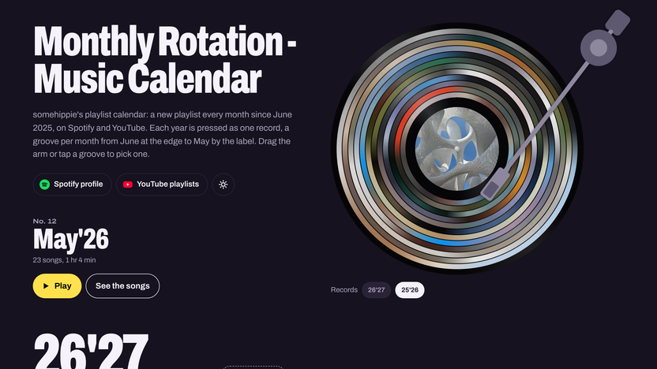

Small Tech LLC
Small Tech LLCMusic
Monthly Rotation - Music Calendar


I make a playlist every month. Each year, June to May, is pressed as one record: a groove per month, coloured from its cover, with Midyears, my year-end compilation, as the label. Any month or song plays right on the page.
- Updates
- Every Monday, from Spotify
- Made with
- Claude, from the design to the weekly refresh
- Source
- MIT-licensed, on GitHub